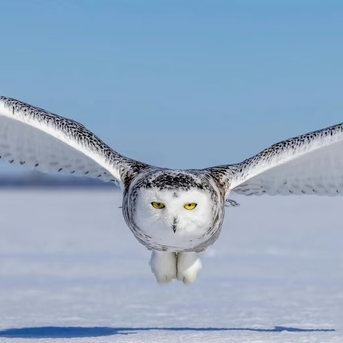
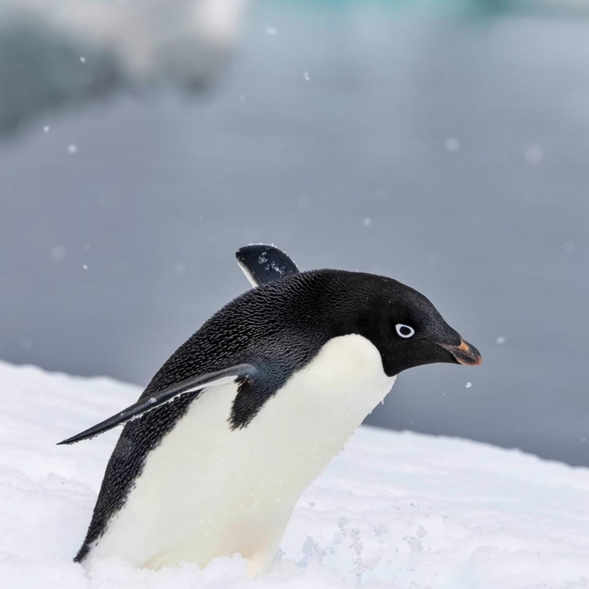
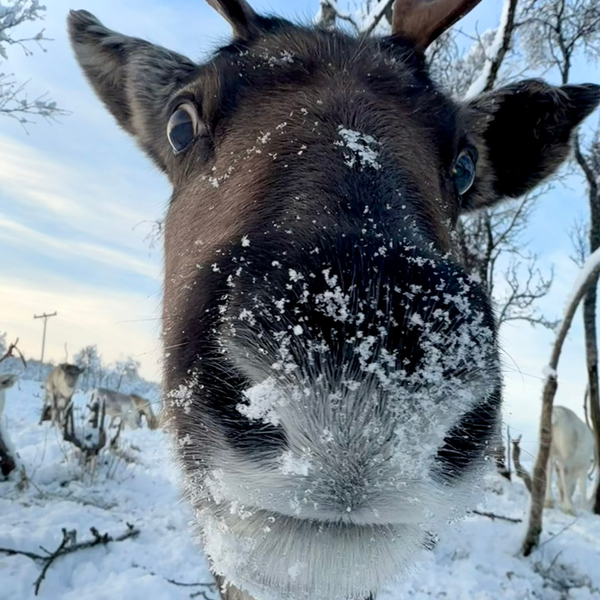

极地生态
北极海冰面积40年减40%，夏季最小覆盖仅450万平方公里
北极熊栖息地缩减致觅食难，部分种群体重下降20%
南极磷虾存活率降15%，海水酸化影响幼体甲壳形成
南极冰架崩解创新高，2023年隆尼冰架崩解面积超1200平方公里
威德尔海豹繁殖地受暖水入侵威胁，幼崽存活率同比降8%
北极燕鸥迁徙路线偏移2000km，为躲避无冰区延长飞行时间
南极阿德利企鹅数量20年降20%，栖息地被融冰淹没
极地海洋酸化速率达全球平均2倍，珊瑚、贝类生存受胁
生命图鉴



极端气候导致啮齿类猎物减少30%，北极苔原植被退化，灌木覆盖率升12%，改变食草动物栖息地北极狐种群数量波动
极地科考新发现：南极海豹幼崽存活率降，海冰提前消融致哺乳周期缩短全球变暖使两极升温速率达全球平均3倍
南极生态监测数据：近10年冰盖物质损失达2800亿吨/年,北极航运活动增50%，噪音污染干扰海洋生物导航与通讯